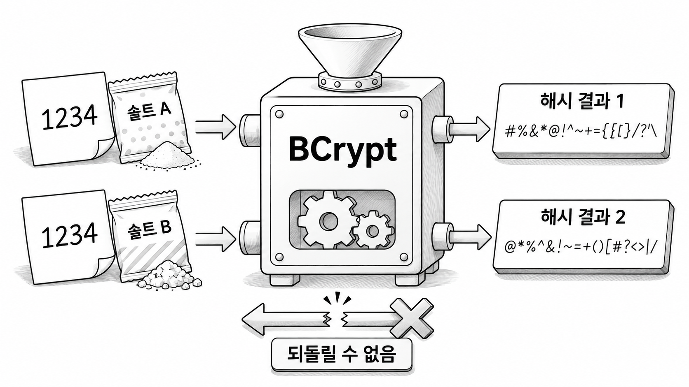
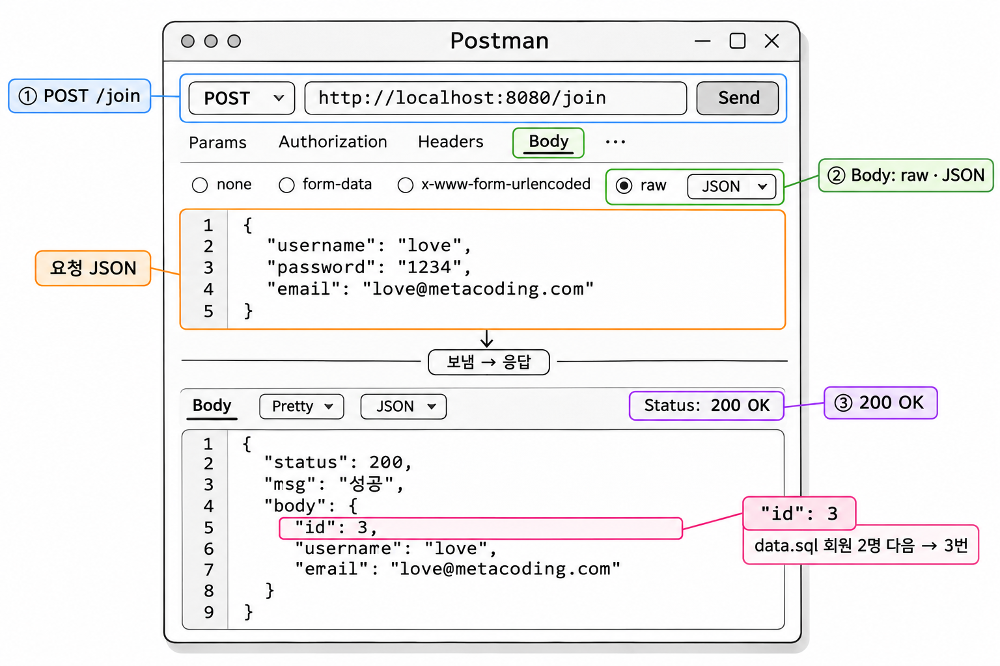
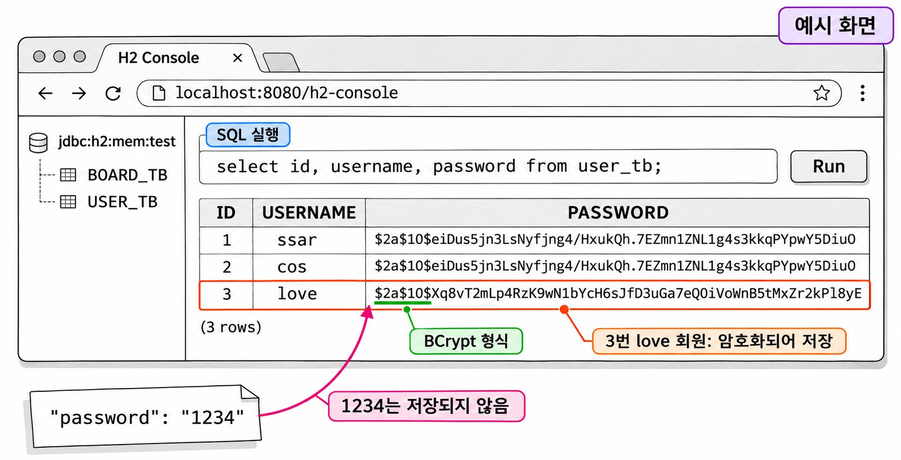

10장. 비밀번호 암호화란?
1. 비밀번호 암호화의 개념
1.1 해시와 BCrypt
회원가입으로 받은 비밀번호를 1234 그대로 저장하면 데이터베이스가 유출되는 순간 모든 회원의 비밀번호가 드러납니다. 같은 비밀번호를 여러 사이트에서 쓰는 사람이 많아서 피해가 이 서비스에서 끝나지도 않습니다. 그래서 비밀번호는 원래 값으로 되돌릴 수 없는 형태로 바꿔 저장합니다.
해시(hash) 함수는 입력을 정해진 길이의 값으로 바꾸는 함수입니다. 입력이 같으면 결과도 늘 같습니다. 하지만 결과에서 입력을 거꾸로 계산해 낼 수는 없습니다. 로그인할 때는 사용자가 입력한 비밀번호를 같은 방법으로 해시해서 저장된 값과 비교합니다. 서버가 원래 비밀번호를 몰라도 맞는 비밀번호인지는 확인할 수 있습니다.
해시만으로는 충분하지 않습니다. 같은 비밀번호는 같은 해시가 되므로, 공격자는 흔한 비밀번호의 해시를 미리 계산한 표를 만들어 둘 수 있습니다. 유출된 값을 이 표와 맞춰 보면 비밀번호를 찾아낼 수 있습니다. 이런 공격을 막으려고 비밀번호마다 임의의 값인 솔트(salt)를 섞어서 해시합니다. 솔트가 다르면 같은 비밀번호라도 해시 결과가 달라지므로 미리 만든 표가 쓸모없어집니다.

BCrypt는 비밀번호를 저장하려고 만든 해시 방식입니다. 그림 10-1처럼 솔트를 자동으로 만들어 섞습니다. 또 일부러 계산을 느리게 해서, 비밀번호를 하나씩 대입해 보는 공격에 시간이 오래 걸리게 합니다. 계산을 얼마나 느리게 할지는 강도(strength) 값으로 정하고, 기본값은 10입니다. 5장에서 data.sql에 넣은 회원 비밀번호가 BCrypt로 만든 값입니다.
$2a$10$eiDus5jn3LsNyfjng4/HxukQh.7EZmn1ZNL1g4s3kkqPYpwY5DiuO| 부분 | 값 | 뜻 |
|---|---|---|
| 알고리즘 버전 | $2a$ | BCrypt 형식 표시 |
| 강도 | 10$ | 2의 10제곱 번 반복 계산 |
| 솔트 | 그다음 22글자 | 이 비밀번호에 쓴 임의 값 |
| 해시 | 마지막 31글자 | 솔트와 비밀번호로 계산한 결과 |
BCrypt 결과 문자열은 늘 60글자입니다. 5장에서 User의 password 열을 @Column(length = 60)으로 잡은 것도 이 길이 때문입니다. 솔트가 결과 문자열 안에 들어 있으므로 따로 저장하지 않아도 됩니다. 로그인할 때는 저장된 문자열에서 솔트를 꺼내고, 입력값을 그 솔트로 다시 계산해 비교합니다.
Spring Security는 암호화와 비교를 PasswordEncoder 인터페이스의 두 메서드로 제공합니다.
코드 조각
String encPassword = passwordEncoder.encode("1234");
boolean ok = passwordEncoder.matches("1234", encPassword);encode()는 원래 비밀번호를 해시 문자열로 바꿉니다. 호출할 때마다 솔트를 새로 만들기 때문에 같은 "1234"를 두 번 encode()해도 결과가 다릅니다. 그래서 encode() 결과끼리 equals()로 비교하면 언제나 false입니다. 비교는 반드시 matches(입력한 비밀번호, 저장된 해시)로 합니다. matches()는 12장 로그인에서 씁니다.
1.2 PasswordEncoder 빈 등록
PasswordEncoder는 회원가입과 로그인 양쪽에서 씁니다. 그래서 빈으로 한 번 등록해 두고 필요한 곳에서 주입받습니다. 등록할 구현체는 BCryptPasswordEncoder입니다. 9장에서 만든 SecurityConfig가 이미 @Configuration 클래스이므로 여기에 @Bean 메서드를 하나 추가합니다.
예제 10-1 — 비밀번호 암호화 빈 등록하기
이어서: 예제 9-2
파일명: src/main/java/com/newtenco/blog/core/SecurityConfig.java
package com.newtenco.blog.core;
import org.springframework.context.annotation.Bean;
import org.springframework.context.annotation.Configuration;
import org.springframework.security.config.annotation.web.builders.HttpSecurity;
import org.springframework.security.crypto.bcrypt.BCryptPasswordEncoder;
import org.springframework.security.crypto.password.PasswordEncoder;
import org.springframework.security.web.SecurityFilterChain;
// 스프링 설정 클래스. 안의 @Bean 메서드가 돌려준 객체를 스프링 빈으로 등록한다
@Configuration
public class SecurityConfig {
// [비밀번호 암호화 도구]
// PasswordEncoder: 비밀번호를 해시로 바꾸는 encode()와, 입력값이 해시와 맞는지 보는 matches()를 가진 인터페이스
// 회원가입(10장)과 로그인(12장) 양쪽에서 쓰므로 빈으로 한 번 등록하고 주입받아 쓴다
// BCryptPasswordEncoder: 솔트를 자동으로 섞는 BCrypt 구현체. 인자가 없으면 강도 10($2a$10$ 형식)
// 반환 타입을 인터페이스로 두면 암호화 방식을 바꿀 때 return 한 줄만 고치면 된다
@Bean
public PasswordEncoder passwordEncoder() {
return new BCryptPasswordEncoder();
}
// SecurityFilterChain: 요청이 컨트롤러에 닿기 전에 거치는 보안 필터 목록
// 이 빈을 직접 등록하면 Spring Boot는 기본 필터 체인을 만들지 않고 이 빈을 쓴다
// HttpSecurity: "이 기능은 켠다 / 끈다"를 선언하는 설정 도구. 스프링이 매개변수로 넣어 준다
@Bean
public SecurityFilterChain filterChain(HttpSecurity http) throws Exception {
// 모든 설정은 http.기능(설정 -> 설정.옵션()) 모양이다
// 메서드 이름이 기능을 고르고, 괄호 안의 람다가 그 기능의 옵션을 정한다
// [H2 콘솔 화면 허용]
// 시큐리티는 기본으로 우리 서버의 화면이 프레임 안에 들어가는 것을 막는다
// H2 콘솔은 화면 여러 개를 끼워 만든 화면이라 그대로 두면 빈 화면이 나온다
// sameOrigin(): 우리 서버의 화면끼리는 끼워 넣을 수 있게 허용한다
http.headers(headers -> headers.frameOptions(frame -> frame.sameOrigin()));
// [CSRF 보호 끄기]
// CSRF: 다른 사이트가 로그인한 사용자의 브라우저로 몰래 요청을 보내게 하는 공격
// 브라우저가 쿠키를 자동으로 붙여 보내기 때문에 생기는 공격이다
// 이 책은 로그인 토큰을 쿠키가 아닌 Authorization 헤더로 보내므로(12장) 이 공격이 통하지 않는다
// 켜 두면 CSRF 토큰이 없는 POST · PUT · PATCH · DELETE 요청이 403으로 거절된다
// 주의: 토큰을 쿠키에 담도록 바꾸면 CSRF 보호를 다시 켜야 한다
http.csrf(csrf -> csrf.disable());
// [폼 로그인 끄기]
// 켜 두면 인증 안 된 브라우저 요청을 /login 로그인 화면으로 보낸다
// 로그인은 12장에서 JSON을 주고받는 API로 직접 만든다
http.formLogin(form -> form.disable());
// [HTTP Basic 끄기]
// 켜 두면 인증 안 된 요청에 401과 "아이디 · 비밀번호를 헤더로 보내라"는 응답 헤더를 돌려준다
// 이 책에서는 쓰지 않는 로그인 방식이다
http.httpBasic(basic -> basic.disable());
// [주소별 접근 규칙] AuthorizationFilter가 이 규칙을 보고 요청을 통과시킬지 정한다
// anyRequest(): 모든 요청, permitAll(): 로그인 여부와 상관없이 허용
// 아직 토큰을 확인하는 필터가 없어서 지금 잠그면 아무도 쓸 수 없다. 14장에서 주소별로 잠근다
http.authorizeHttpRequests(auth -> auth.anyRequest().permitAll());
// 위에서 선언한 내용대로 필터 체인을 만들어 돌려준다
return http.build();
}
}실행 결과
PowerShell에서 gradlew.bat bootRun으로 서버를 다시 띄우면 오류 없이 뜹니다. 응답은 예제 9-2와 같습니다. 이 빈은 3절에서 UserService가 주입받아 쓸 때 효과가 드러납니다.
메서드의 반환 타입은 구현체 BCryptPasswordEncoder가 아니라 인터페이스 PasswordEncoder입니다. 주입받는 쪽도 PasswordEncoder 타입으로 받습니다. 그러면 암호화 방식을 바꿀 때 이 메서드의 return 한 줄만 고치면 되고, 서비스 코드는 손대지 않아도 됩니다. new BCryptPasswordEncoder()처럼 인자 없이 만들면 강도 10이 적용됩니다. 그래서 data.sql의 비밀번호와 같은 $2a$10$ 형식의 값이 만들어집니다.
2. 요청 DTO
2.1 요청 DTO와 응답 DTO를 나누는 이유
6장에서는 엔티티를 그대로 내보내지 않으려고 응답 DTO를 만들었습니다. 회원가입은 방향이 반대여서 클라이언트가 보낸 데이터를 받아야 합니다. 이때 받는 데이터의 모양을 정하는 것이 요청 DTO입니다. 요청 DTO와 응답 DTO는 담는 값이 다르므로 따로 만듭니다.
| 구분 | 회원가입 요청 DTO | 회원 응답 DTO |
|---|---|---|
| 방향 | 클라이언트 → 서버 | 서버 → 클라이언트 |
id | 없음(데이터베이스가 정함) | 있음 |
password | 있음(원래 비밀번호) | 없음(밖으로 내보내지 않음) |
username · email | 있음 | 있음 |
표에서 보듯 비밀번호는 요청에는 꼭 필요하지만 응답에는 있으면 안 됩니다. 반대로 id는 응답에는 필요하지만 클라이언트가 정해서 보내면 안 되는 값입니다. DTO 하나로 양쪽을 처리하면 어느 한쪽에 필요 없는 값이 섞여 들어갑니다.
User 엔티티로 요청을 바로 받으면 문제가 더 큽니다. 엔티티에는 id와 createdAt처럼 서버가 정해야 하는 필드도 있습니다. 클라이언트가 요청에 이런 값을 끼워 보내면 그 값이 엔티티에 그대로 들어갑니다. 요청 DTO에 받을 값만 구성 요소로 두면 나머지 값은 들어올 자리가 없습니다. 요청 DTO는 클라이언트가 정해도 되는 값의 목록입니다.
2.2 @Builder와 요청 DTO의 toEntity
회원가입 API는 클라이언트가 보낸 JSON을 요청 DTO로 받고, 이를 User 엔티티로 바꿔 저장합니다. 요청 DTO는 UserRequest 클래스 안에 record로 모읍니다. 6장의 BoardResponse처럼 바깥 클래스를 DTO 이름의 묶음으로 쓰는 방식입니다.
요청 DTO를 엔티티로 바꾸려면 값을 채워서 User를 만들 방법이 있어야 합니다. 5장의 User에는 JPA용 기본 생성자만 있으므로 필드를 채우는 생성자를 추가합니다. 이 생성자에 Lombok의 @Builder를 붙입니다. 생성자에 @Builder를 붙이면 Lombok이 컴파일할 때 빌더 클래스를 만들어 줍니다. 그러면 필드 이름으로 된 메서드를 이어 불러 값을 채울 수 있습니다.
기본 문법
클래스명 객체 = 클래스명.builder()
.필드명(값)
.필드명(값)
.build();생성자를 new User(null, "love", 암호, "love@metacoding.com", null)처럼 부르면 어느 자리에 무엇이 들어가는지 알아보기 어렵습니다. username과 email은 둘 다 String이어서 순서를 바꿔 써도 컴파일 오류가 나지 않습니다. 빌더는 값마다 필드 이름을 함께 쓰므로 이런 실수가 눈에 띕니다. 빌더에서 채우지 않은 필드는 null로 남습니다.
예제 10-2 — 회원 빌더와 회원가입 요청 DTO 만들기
이어서: 예제 10-1
파일명: src/main/java/com/newtenco/blog/user/User.java
package com.newtenco.blog.user;
import jakarta.persistence.Column;
import jakarta.persistence.Entity;
import jakarta.persistence.GeneratedValue;
import jakarta.persistence.GenerationType;
import jakarta.persistence.Id;
import jakarta.persistence.Table;
import lombok.Builder;
import lombok.Getter;
import lombok.NoArgsConstructor;
import org.hibernate.annotations.CreationTimestamp;
import java.sql.Timestamp;
@NoArgsConstructor
@Getter
@Entity
@Table(name = "user_tb")
public class User {
@Id
@GeneratedValue(strategy = GenerationType.IDENTITY)
private Integer id;
@Column(unique = true, length = 20, nullable = false)
private String username;
@Column(length = 60, nullable = false)
private String password;
@Column(length = 30, nullable = false)
private String email;
@CreationTimestamp
private Timestamp createdAt;
@Builder
public User(Integer id, String username, String password, String email, Timestamp createdAt) {
this.id = id;
this.username = username;
this.password = password;
this.email = email;
this.createdAt = createdAt;
}
}파일명: src/main/java/com/newtenco/blog/user/UserRequest.java
package com.newtenco.blog.user;
public class UserRequest {
public record JoinDTO(String username, String password, String email) {
public User toEntity(String encPassword) {
return User.builder()
.username(username)
.password(encPassword)
.email(email)
.build();
}
}
}실행 결과
서버가 오류 없이 다시 뜹니다. 두 파일을 쓰는 코드는 3절에서 만듭니다.
생성자를 직접 추가했더라도 @NoArgsConstructor는 지우면 안 됩니다. JPA는 조회 결과로 엔티티 객체를 만들 때 기본 생성자를 쓰기 때문입니다(5장). toEntity()는 id와 createdAt을 채우지 않으므로 두 필드는 null인 채로 저장 단계로 넘어갑니다. 저장할 때 데이터베이스가 IDENTITY 전략으로 id에 번호를 매기고, @CreationTimestamp가 createdAt을 현재 시각으로 채웁니다.
toEntity()가 비밀번호를 DTO의 password가 아니라 매개변수 encPassword로 받는 데 주목하세요. 요청 DTO는 암호화 방법을 알지 못합니다. 암호화는 PasswordEncoder를 주입받은 서비스가 맡고, DTO는 암호화된 값을 받아 엔티티에 넣기만 합니다. 이렇게 나누면 원래 비밀번호가 엔티티에 들어갈 길이 처음부터 없습니다.
3. 회원가입 API
3.1 @PostMapping과 @RequestBody
글 목록과 글 상세는 데이터를 읽는 요청이라서 GET을 썼습니다. 회원가입은 새 자원인 회원을 만드는 요청이므로 3장에서 본 대로 POST를 씁니다. @PostMapping은 POST 요청을 메서드에 연결하는 애너테이션이고, 쓰는 방법은 @GetMapping과 같습니다. 9장에서 CSRF 보호를 꺼 두었기 때문에 이 POST 요청은 CSRF 토큰 없이 보내도 403 응답을 받지 않습니다.
POST 요청은 보낼 데이터를 주소가 아니라 요청 본문(body)에 담습니다. 회원가입 API는 본문에 JSON을 담아 보냅니다. @RequestBody는 요청 본문의 JSON을 매개변수 객체로 바꿔 달라는 표시입니다. 6장에서 Jackson이 record를 JSON으로 바꿔 응답했는데, 이번에는 방향이 반대입니다. Jackson이 JSON의 키 이름과 record 구성 요소의 이름을 맞춰서 JoinDTO 객체를 만듭니다.
기본 문법
@PostMapping("/주소")
public ResponseEntity<?> 메서드명(@RequestBody 요청DTO타입 reqDTO) {
return Resp.ok(서비스.메서드(reqDTO));
}JSON의 키가 record 구성 요소와 맞지 않을 때는 다음처럼 동작합니다.
| 경우 | 결과 |
|---|---|
JSON에 password 키가 없다 | 오류 없이 password가 null인 JoinDTO가 만들어진다 |
JSON에 record에 없는 role 키가 있다 | 그 키는 무시된다(Spring Boot가 구성한 Jackson 3의 기본 동작) |
키가 빠져도 DTO를 만드는 단계에서는 오류가 나지 않습니다. password가 빠진 채로 회원가입을 보내면 저장할 때 password 열의 nullable = false에 걸려 500 응답이 돌아옵니다. 값이 꼭 있어야 하는 구성 요소는 11장에서 @NotBlank로 미리 검사해 400으로 알려 줍니다. 모르는 키를 무시하는 동작은 2.1에서 말한 요청 DTO의 장점을 그대로 보여 줍니다. 클라이언트가 "role": "ADMIN"을 끼워 보내도 JoinDTO에는 그 값을 받을 자리가 없습니다.
나머지 파일은 6장에서 글 목록 API를 만들 때처럼 Repository, 응답 DTO, Service, Controller 순으로 만듭니다.
예제 10-3 — 회원가입 API 만들기
이어서: 예제 10-2
파일명: src/main/java/com/newtenco/blog/user/UserRepository.java
package com.newtenco.blog.user;
import org.springframework.data.jpa.repository.JpaRepository;
public interface UserRepository extends JpaRepository<User, Integer> {
}파일명: src/main/java/com/newtenco/blog/user/UserResponse.java
package com.newtenco.blog.user;
public class UserResponse {
public record DTO(Integer id, String username, String email) {
public DTO(User user) {
this(user.getId(), user.getUsername(), user.getEmail());
}
}
}파일명: src/main/java/com/newtenco/blog/user/UserService.java
package com.newtenco.blog.user;
import lombok.RequiredArgsConstructor;
import org.springframework.security.crypto.password.PasswordEncoder;
import org.springframework.stereotype.Service;
import org.springframework.transaction.annotation.Transactional;
@RequiredArgsConstructor
@Transactional(readOnly = true)
@Service
public class UserService {
private final UserRepository userRepository;
private final PasswordEncoder passwordEncoder;
@Transactional
public UserResponse.DTO 회원가입(UserRequest.JoinDTO reqDTO) {
// 받은 비밀번호를 BCrypt 해시로 바꾼다. 호출할 때마다 솔트가 새로 정해져 결과가 매번 다르다
// 원래 비밀번호(1234)는 엔티티에도 DB에도 들어가지 않는다
String encPassword = passwordEncoder.encode(reqDTO.password());
User savedUser = userRepository.save(reqDTO.toEntity(encPassword));
return new UserResponse.DTO(savedUser);
}
}파일명: src/main/java/com/newtenco/blog/user/UserController.java
package com.newtenco.blog.user;
import com.newtenco.blog.core.util.Resp;
import lombok.RequiredArgsConstructor;
import org.springframework.http.ResponseEntity;
import org.springframework.web.bind.annotation.PostMapping;
import org.springframework.web.bind.annotation.RequestBody;
import org.springframework.web.bind.annotation.RestController;
@RequiredArgsConstructor
@RestController
public class UserController {
private final UserService userService;
@PostMapping("/join")
public ResponseEntity<?> join(@RequestBody UserRequest.JoinDTO reqDTO) {
return Resp.ok(userService.회원가입(reqDTO));
}
}실행 결과
Postman에서 메서드를 POST, 주소를 http://localhost:8080/join으로 정합니다. Body 탭에서 raw와 JSON을 고르고 다음 내용을 넣어 보냅니다.
{
"username": "love",
"password": "1234",
"email": "love@metacoding.com"
}상태 코드 200 OK와 함께 다음 응답이 돌아옵니다. data.sql이 회원 두 명을 먼저 넣었으므로 새 회원의 id는 3입니다.
{
"status": 200,
"msg": "성공",
"body": {
"id": 3,
"username": "love",
"email": "love@metacoding.com"
}
}
생성형 예시 · 실제 실행 안 함
UserService는 UserRepository와 1.2에서 등록한 PasswordEncoder 빈을 생성자로 주입받습니다. 회원가입()은 세 단계로 동작합니다. 먼저 요청으로 받은 비밀번호를 encode()로 암호화합니다. 그 값을 toEntity()에 넘겨 엔티티를 만들고 save()로 저장합니다. 마지막으로 저장된 엔티티를 응답 DTO로 바꿔 돌려줍니다.
클래스에는 @Transactional(readOnly = true)가 붙어 있습니다. 하지만 회원가입()은 데이터를 저장하므로 메서드에 @Transactional을 다시 붙였습니다. 메서드에 붙인 설정이 클래스 설정보다 우선하므로 이 메서드만 쓰기가 가능한 트랜잭션에서 실행됩니다.
save()가 돌려준 savedUser에는 데이터베이스가 매긴 id가 들어 있어서 응답에 3이 나옵니다. 응답 DTO에는 password가 없습니다. 비밀번호는 암호화된 값이라도 밖으로 내보낼 이유가 없기 때문입니다.
같은 요청을 한 번 더 보내면 username 열의 unique 제약을 어겨 500 응답이 돌아옵니다. 아이디 중복이나 빈 값 같은 입력값 문제를 400으로 알려 주는 방법은 11장에서 다룹니다.
3.2 암호화된 비밀번호 확인
응답에는 비밀번호가 없으므로 실제로 어떤 값이 저장됐는지는 H2 콘솔에서 확인합니다. 예제 10-3으로 회원가입 요청을 보낸 뒤, 서버를 끄지 않은 채 브라우저로 http://localhost:8080/h2-console에 접속합니다. JDBC URL에 jdbc:h2:mem:test를 넣고 연결한 뒤 다음 SQL을 실행합니다. 메모리 DB는 서버를 다시 켜면 비워지므로 서버를 켠 상태에서 가입과 조회를 이어서 해야 합니다.
코드 조각
select id, username, password from user_tb;조회 결과는 다음과 같은 모양입니다. 솔트가 매번 임의로 정해지므로 3번 회원의 해시 값은 실행할 때마다 다릅니다.
| ID | USERNAME | PASSWORD |
|---|---|---|
| 1 | ssar | $2a$10$eiDus5jn3LsNyfjng4/HxukQh.7EZmn1ZNL1g4s3kkqPYpwY5DiuO |
| 2 | cos | $2a$10$eiDus5jn3LsNyfjng4/HxukQh.7EZmn1ZNL1g4s3kkqPYpwY5DiuO |
| 3 | love | $2a$10$로 시작하는 60글자 값 |

생성형 예시 · 실제 실행 안 함
요청에 담아 보낸 1234는 데이터베이스 어디에도 없습니다. 3번 회원의 비밀번호는 data.sql로 넣은 회원과 같은 $2a$10$ 형식입니다. 그래서 직접 가입한 회원과 샘플 회원 모두 12장의 로그인에서 같은 matches()로 비밀번호를 확인할 수 있습니다.
username만 바꾸고 같은 비밀번호 1234로 한 명 더 가입해 보세요. 두 회원의 해시 값이 서로 다르게 저장됩니다. 1.1에서 설명한 솔트가 실제로 동작한 결과입니다. 해시 값은 달라도 matches()는 두 값 모두 1234와 맞다고 판단합니다. 1번과 2번 회원의 해시 값이 똑같은 것은 data.sql에 같은 해시 문자열을 복사해 넣었기 때문입니다.